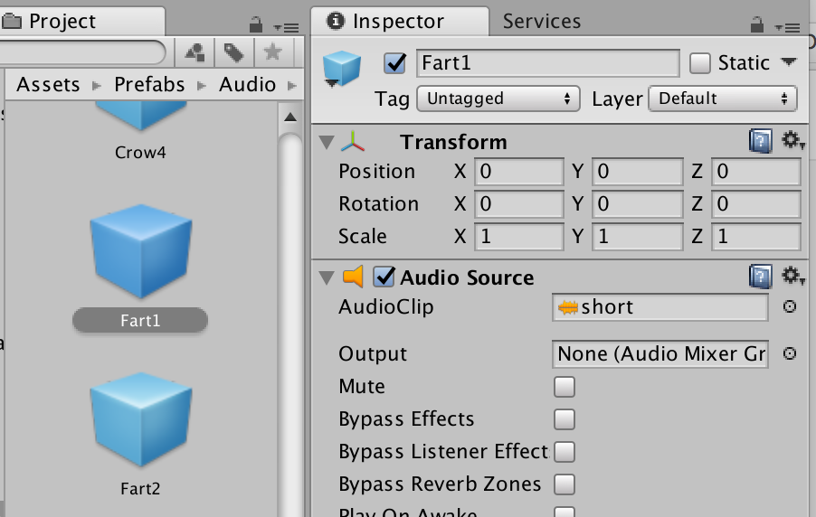
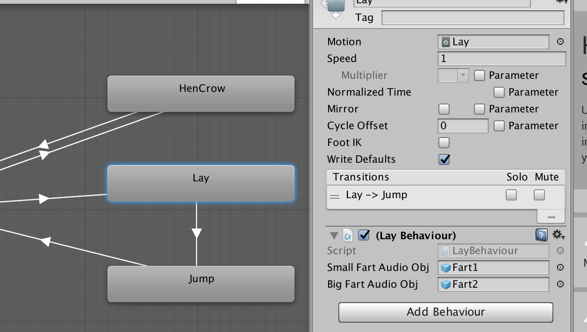

在做智障游戏欢乐鸡夫人的时候，使用了 Unity 动画状态机 State Machine Animator, 尝试了下 Unity 的 AudioSource 的播放，试图把这玩意儿搞得让自己舒服。

实现功能
每一只鸡会有 2 种放屁声，如果戳到的时候是 bonus click，则放 2 号屁，否则就会放 1 号屁。
实现方法
- 做第一版的时候为了速撸，没有考虑别的，直接写在控制脚本里，挂在每一只鸡的 Prefab 上，然后脚本里不同部分控制代码（走路、跳跃、放屁）搅合在了一起，非常令人不快。
- 然后发现 Unity 5 之后出了个 State Machine Behaviour，可以在挂在 Animator 状态上，每次状态转换的时候，自己执行，不用继承 MonoBehaviour，于是把声音控制重构为状态机控制器。
- 但是写完后发现，生成和销毁非常没有意义，浪费计算量，之后准备学习写个事件系统，靠 Message 控制声音。
方法 1: GameObject 脚本控制
就很 Naïve 很传统的版本，
- 先在每一只鸡的身上挂上两个放屁声的 AudioSource
- 然后每只鸡挂一个控制器脚本，脚本类里有个 public 的 AudioSource 数组，把那两个放屁声拖进去
- 在更新的时候状态变为 egging 就会进入 Egg 函数播放音频。
1 | public class ChikenController : MonoBehaviour { |
方法 2: 状态机控制
在 Animator 中，可以为每一个状态附加上一个 Behaviour 脚本。这样，当切换到该状态的时候，就可以根据
Unity StateMachineBehaviour 文档 中描述的函数，自动执行脚本。
因为 Unity 中 AudioSource 不能脱离 GameObject 存在，所以为每一个 AudioSource 找一个 GameObject 载体，挂上去后制作成 Prefab。

然后在 Animator 状态机需要播放声音的状态中，点击 Add Behaviour 增加 StateMachineBehaviour 脚本。在这里我需要在每一只鸡进入生蛋状态的时候执行放屁脚本。

在脚本中要注意的是，由于 AudioSource 是挂在 Obj 上被脚本引用，所以在执行脚本的时候，Obj 还不存在。因此我们无法向之前一样直接获取 Component，这里 一定要实例化 Obj，再从实例化后的 Obj 中获取 Component，否则执行的时候会报 Cannot play inactive sound 的错。然后离开状态的时候要记得清除掉实例。
1 | public class LayBehaviour : StateMachineBehaviour { |
方法 3: 事件系统控制
未完待续